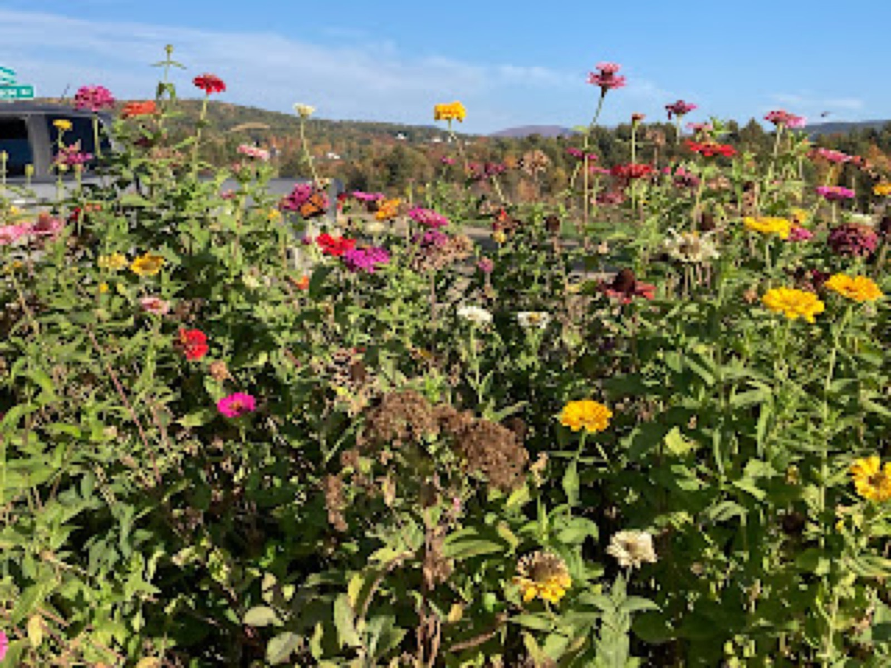
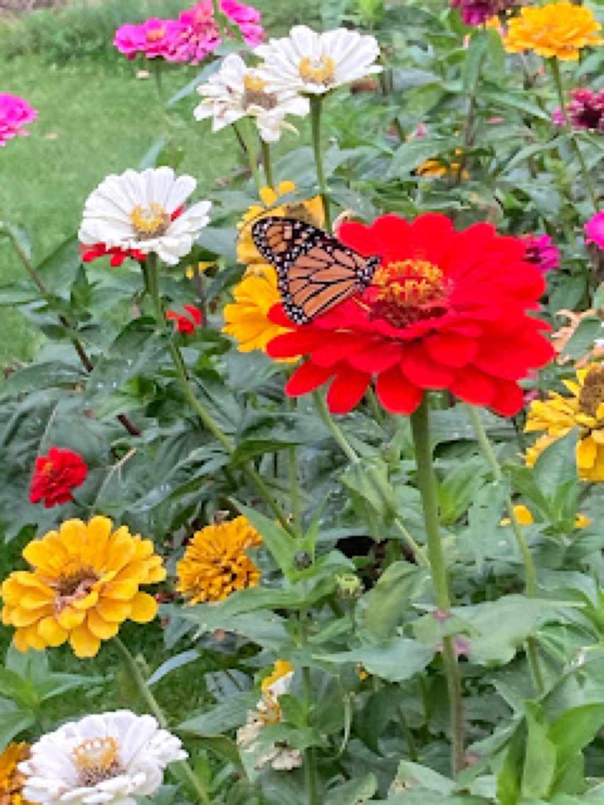

January 2022
Monarchs Everywhere! And a Plant List for 2022

The summer of 2021 was terrible for so many reasons however, let’s leave some of the atrocities on the back burner. The Monarchs were here, there, and everywhere. When I make this statement, I want to recognize the work of Journey North that maps and collects data on migrating species (including, but not limited to the Monarch.) If you don’t participate in iNaturalist and want to contribute to a body of work that helps Monarchs, consider Journey North.
Here in beautiful Charlotte, we enjoyed many Monarch sightings at all the neighborhood gardens, in yards, in fields, everywhere. Not to mention the caterpillars, eggs, milkweed, roosts, and all the mating! The big question remains, how much milkweed will you get for your garden next year? Let’s also not forget the nectar sources. Aster and goldenrod are just a few late fall nectar sources. Stock up on zinnia seeds (a favorite of our migrating species) and don’t forget about echinacea! I’ve also listed a few more things below for your garden planning. Also check out Xerces Society for a complete version this great list:
Host Plants for Monarchs for Zone 5:
- clasping milkweed (Asclepias amplexicaulis)
- common milkweed (Asclepias syriaca)
- fourleaf milkweed (Asclepias quadrifolia)
- poke milkweed (Asclepias exaltata)
- swamp milkweed (Asclepias incarnata)
Nectar Sources for Monarchs Zone 5:

Annuals:
- Zinnias
- Sunflowers
Perennials:
- Woodland sunflower (Helianthus divaricatus)
- Boneset thoroughwort (Eupatorium perfoliatum)
- Canada goldenrod (Solidago altissima)
- Common yarrow (Achillea millefolium)
- Liatris (scariosa)
- Flat-top goldentop (Euthamia graminifolia)
- Heart-leaved American-aster (Symphyotrichum cordifolium)
- New York aster (Symphyotrichum novi-belgii)
- New York ironweed (Vernonia noveboracensis)
- Obedient false dragonhead (Physostegia virginiana)
- Seaside goldenrod (Solidago sempervirens)
- Showy goldenrod (Solidago speciosa)
- Sweetscented joe pye weed (Eutrochium purpureum)
- Trumpetweed (Eutrochium fistulosum)
- Whitetop aster (Doellingeria umbellata)
- Wild bergamot (Monarda fistulosa)
Filed in the garden journal · January 2022